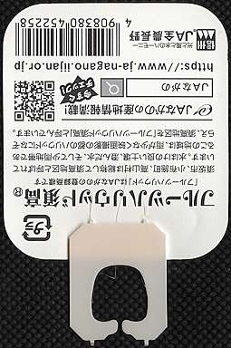
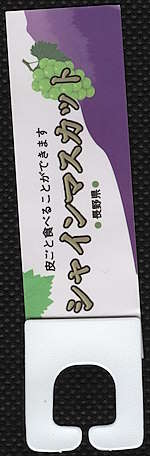
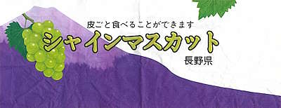
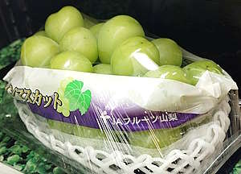
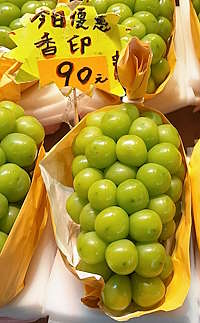
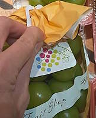
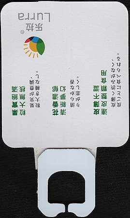
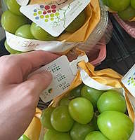
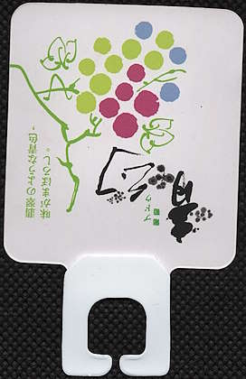

Kurisuphenax genus and the shine muscat grape scam
Okay so you can find I. kurisu with amiculae attached on paper wrapping around shine muscat grapes of the brand JAながの (Nagano Prefecture's regional cooperative of the Japan Agricultural Coopoeratives). With the JA brand on the host (wrapping paper) and the amiculae (the paper tag attached to I. kurisu), you know you are looking at "the real thing" - the grapes are indeed Japanese.
 |
| scan of a light tan I. kurisu specimen which was attached to paper wrapping shine muscat grapes of the brand JAながの imported from Japan |
I don't think there will be many people out there who dares to impersonate JA...but then there are some people who took a different approach.
Kurisuphenax edentulus and its wrapping paper host
 |
| scan of a white K. edentulus specimen which was attached to paper wrapping shine muscat grapes of an unknown brand |
 |
| scan of the paper wrapping shine muscat grapes of an unknown brand |
So it has Japanese text on it, and its design closely resembled the wrapping paper of shine muscat grapes of the brand JAフルーツ山梨 (Yamanashi Prefecture's JA regional co-op). Notice how I said it resembled but wasn't the Yamanashi grapes' wrapping paper? The reason I say that is because the real Yamanashi grape's wrapping paper do not have occlupanids attached on them. There are holes for the grape stem to stick out from.
 |
| paper wrapping shine muscat grapes of the brand JAフルーツ山梨 imported from Japan |
| YATA in Tsuen Wan Plaza |
| Photo taken in Y2026-M09 |
So, what is going on with K. edentulus? Why does the unknown brand wrapping paper says 長野県 (Nagano Prefecture)? Keep this in the back of your mind, I will come back to it.
By the way, a random story: I found K. edentulus with the purple amiculae at a fruit stall in a market, and I saw text "Korean shine muscat grapes" (in Chinese) on the price tag. The wrapping paper and amiculae showed text for Nagano Prefecture in Japanese kanji, so I pretended to know nothing and asked the owner "Isn't Nagano in Japan?", to which the owner ridiculously replied "it's Korea Nagano (韓國長野)!". The grapes were cheaper at this stall than in Yau Ma Tei Fruit Market stalls (because YMTFM stalls all claim that these were actual Japanese grapes so they sold these at Japanese grapes price, while Korean grapes were slightly cheaper), so I bought at this stall anyway. The stall owner did try to scam me, but for occlupanology, I bought the grapes so I could get my first specimen of K. edentulus. Oh and this scam stall closed just one year later.
Kurisuphenax secondus and its wrapping paper host
Here we have almost nothing, blank wrapping paper with nothing on the wrapping paper. The only difference between K. edentulus and K. secondus is that it has distal coxae.
 |
| white K. secondus specimens attached to paper wrapping shine muscat grapes of an unknown brand |
| a stall in Yau Ma Tei Fruit Market |
| Photo taken in Y2025-M02 |
Kurisuphenax ultimus and its wrapping paper host
So we have an actual brand name in both simplified Chinese and English here: 乐拉 / Lurra. The jaws, oral groove, and speciment texture are slightly different from the other two Kurisuphenax species. There are also Chinese text on the amiculae.
 |
| white K. ultimus specimens attached to paper wrapping shine muscat grapes of an the brand Lurra |
| Ming Fruit Shop in Metro City Plaza phase 1 (MCP One) |
| Photo taken in Y2026-M01 |
 |
| scan of a white K. ultimus specimen which was attached to paper wrapping shine muscat grapes of the brand Lurra, likely from mainland China |
The evolution of Kurisuphenax genus
 |
| white K. secondus specimens attached to paper wrapping shine muscat grapes of an the brand Lurra |
| Ming Fruit Shop in The Lane shopping Mall in Hang Hau |
| Photo taken in Y2026-M02 |
 |
| scan of a white K. secondus specimen which was attached to paper wrapping shine muscat grapes of the brand Lurra, likely from mainland China |
Now this is interesting, K. secondus that bears the amiculae previously found on K. ultimus, on paper wrapping grapes of the brand Lurra. This likely means that K. secondus and K. ultimus are related in some way. And with how similar K. edentulus is to K. secondus, I have a few theories:
- species in the Kurisuphenax genus may have been artificially created to mimic I. kurisu
- whoever created the species in the Kurisuphenax genus manipulated the prey preference of these species and released specimens to the wild, which only preyed on wrapping paper on mainland Chinese grapes that pretend to be Japanese grapes due to said manipulation
- K. edentulus was the "first batch" of the artificial creation which look rather different from I. kurisu; K. secondus was the evolution of K. edentulus as the genus strive for perfect mimicry of I. kurisu (gaining the distal coxae); K. ultimus appears to be the most recent evolution that have proximal and distal coxae, being the closest mimic to I. kurisu